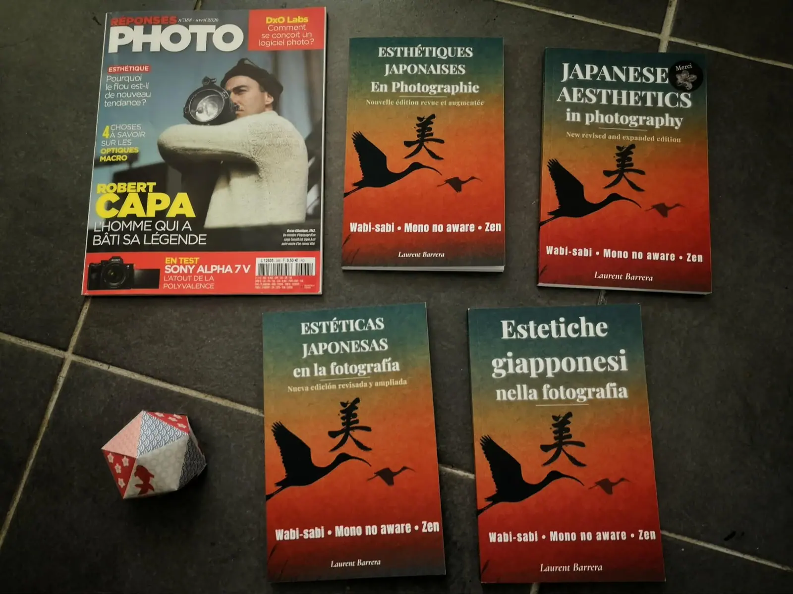
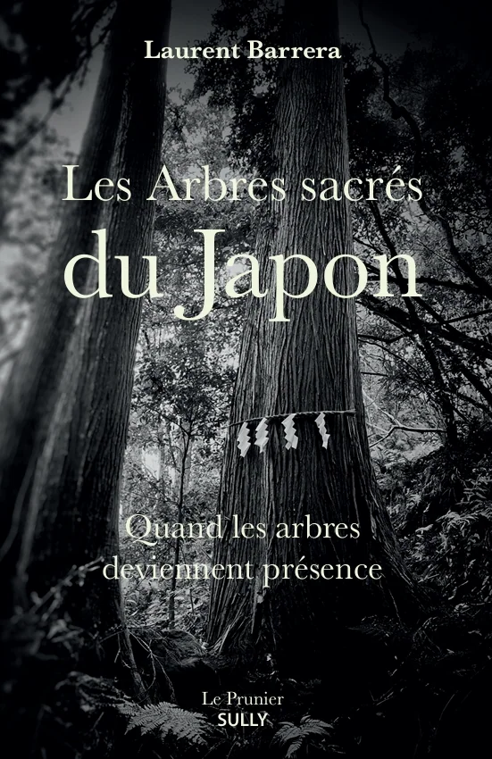

Livres
Cinq livres
En parallèle de mon travail photographique, j’explore à travers l’écriture les liens entre le Japon, la photographie, l’esthétique et notre manière de regarder le monde.


À paraître le 5 novembre 2026
Les arbres sacrés du Japon
Quand les arbres deviennent présence
Parution dans 16 jours.
Disponible en librairie
Des forêts anciennes de Yakushima aux camphriers monumentaux de Kyūshū, Laurent Barrera parcourt le Japon à la rencontre de ces arbres millénaires vénérés comme des présences vivantes.
Catalogue
Choisir un livre
Photographies et récits · 5 novembre 2026
Les arbres sacrés du Japon
Quand les arbres deviennent présence
À paraître
Une invitation à découvrir ces arbres millénaires qui occupent une place singulière dans la culture et la spiritualité japonaises, des forêts anciennes de Yakushima aux camphriers monumentaux de Kyūshū.
- Éditeur
- Le Prunier SULLY
- Parution
- 5 novembre 2026
- Prix
- 22 €
Photographies et récits · 5 novembre 2026
Les arbres sacrés du Japon
Quand les arbres deviennent présence
À paraître
Une invitation à découvrir ces arbres millénaires qui occupent une place singulière dans la culture et la spiritualité japonaises, des forêts anciennes de Yakushima aux camphriers monumentaux de Kyūshū.
- Éditeur
- Le Prunier SULLY
- Parution
- 5 novembre 2026
- Prix
- 22 €
Essai et pratique · Février 2026
Pleine Présence en Photographie
25 exercices photo pour développer votre regard
Et si photographier consistait d’abord à être pleinement présent ? Une approche plus contemplative de la photographie, fondée sur l’attention, le silence et la relation au monde.
- Parution
- Février 2026
- Langues
- français, anglais, espagnol
- Formats
- papier et numérique
- Prix
- à compléter
Essai · Décembre 2025
Esthétiques japonaises en photographie
Wabi-sabi · Mono no aware · Zen
Nouvelle édition revue et augmentée
Une exploration des grandes sensibilités esthétiques japonaises (wabi-sabi, ma, yūgen, mono no aware, zen) et de la manière dont elles peuvent transformer notre pratique photographique.
- Parution
- Décembre 2025
- Langues
- français, anglais, espagnol, italien, allemand
- Formats
- papier et numérique
- Prix
- à compléter
Nouvelles · Octobre 2025
Fragrances du Japon
17 histoires pour revenir à l’essentiel
À travers dix-sept nouvelles, le Japon devient le décor de rencontres, de voyages et d’instants où une existence peut soudain changer de direction.
- Parution
- Octobre 2025
- Langues
- français et anglais
- Disponible
- Fnac.com, Librinova, Amazon
- Prix
- à compléter
Livre photographique · Septembre 2022
Koï
Livre photographique
Premier prix du livre photo, Namur 2022
La série des carpes koï réunie en livre. Imprimé par Escourbiac, reconnu pour son savoir-faire et son respect de l’environnement.
- Format
- 20 × 28 cm, 64 pages
- Tirage
- 500 exemplaires numérotés
- Reliure
- couverture souple à rabats
- ISBN
- 979-10-699-9769-1
- Prix
- 34 €
Les exemplaires papier sont aussi disponibles en commande directe auprès de l’auteur. Le livre Koï peut être ajouté au panier (simulation).